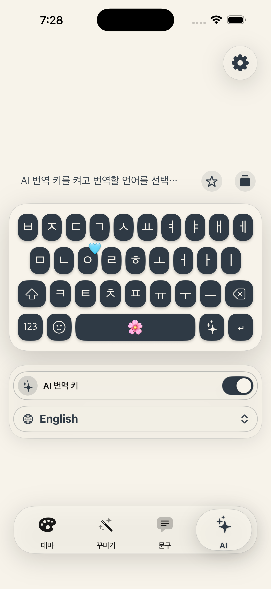
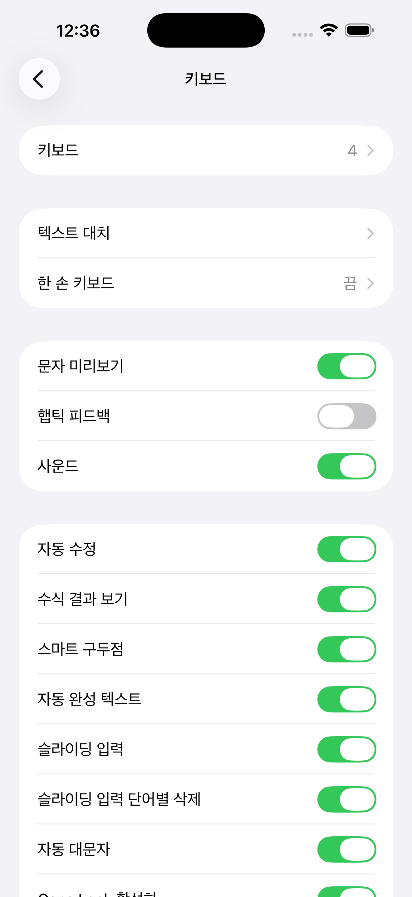
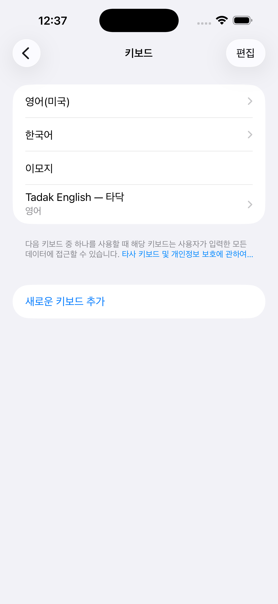
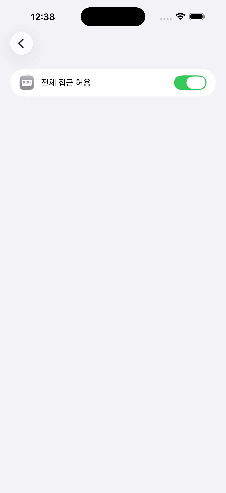
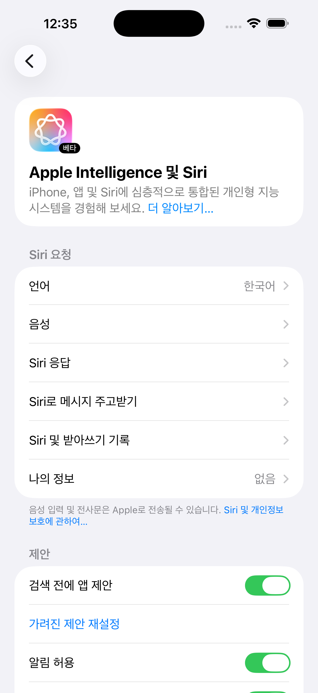
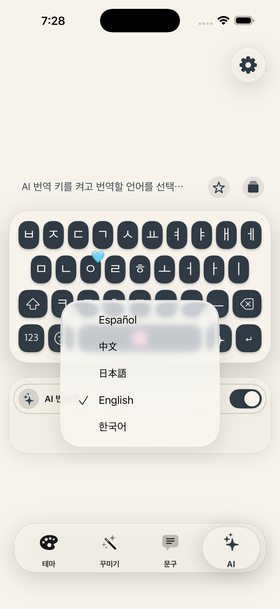
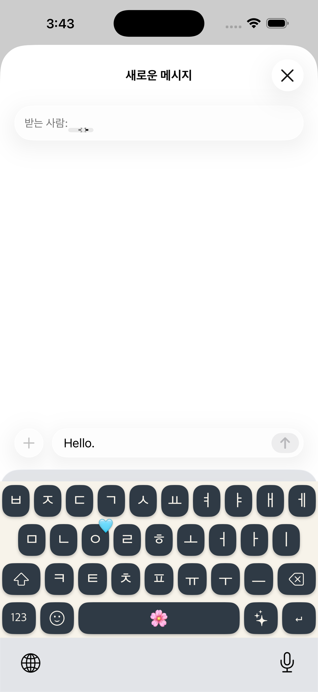

번역에 집중한 AI 키
Tadak AI의 첫 버전은 번역 기능에 집중합니다. 사용자가 작성한 문장을 선택한 목표 언어로 바꾸는 흐름만 제공하며, 문장 작성 보조나 이미지 생성 같은 범용 AI 기능은 포함하지 않습니다.
한국어 시스템과 Siri 기준 안내
Tadak AI는 Apple Intelligence를 사용해 현재 번역 기능을 제공하는 AI 키입니다. 문장을 입력한 뒤 AI 키를 누르면 Tadak 키보드 안에서 번역 결과를 확인할 수 있습니다.

개요
Tadak AI의 첫 버전은 번역 기능에 집중합니다. 사용자가 작성한 문장을 선택한 목표 언어로 바꾸는 흐름만 제공하며, 문장 작성 보조나 이미지 생성 같은 범용 AI 기능은 포함하지 않습니다.
Tadak은 자체 AI 서버로 문장을 보내지 않습니다. 다만 Apple Intelligence는 요청을 먼저 기기에서 처리할 수 있는지 판단하고, 더 복잡한 요청에는 Apple의 Private Cloud Compute를 사용할 수 있습니다.
이 문서는 한국 사용자가 따라 하기 쉽도록 시스템 언어와 Siri 언어를 모두 한국어로 맞춘 상태의 화면을 기준으로 작성했습니다. Apple Intelligence는 기기 언어와 Siri 언어가 같은 지원 언어여야 사용할 수 있습니다.
Apple Intelligence 정책 기준
Tadak AI는 Apple Intelligence가 켜진 iPhone 또는 iPad에서 사용할 수 있습니다. 아래 조건은 Apple 지원 문서를 기준으로 정리했습니다.
1단계
Tadak AI 키는 Tadak 키보드 안에서 동작합니다. 먼저 iOS 설정에서 Tadak 키보드를 추가하고, 필요한 경우 전체 접근을 허용합니다.
설정 앱을 열고 일반 > 키보드 > 키보드로 이동합니다.

새로운 키보드 추가를 눌러 Tadak 키보드를 추가합니다. 설치 후 목록에 Tadak 항목이 표시됩니다.

Tadak 키보드를 눌러 상세 화면으로 들어간 뒤 전체 접근 허용을 켭니다. Tadak의 설정 값을 키보드 확장과 공유하기 위해 필요한 단계입니다.

2단계
Tadak AI는 Apple Intelligence가 준비된 뒤 사용할 수 있습니다. 기기 언어와 Siri 언어가 모두 한국어인지 함께 확인하세요.
Siri 언어를 바꾸면 새 언어가 완전히 다운로드되고 기기 언어와 일치할 때까지 Apple Intelligence가 잠시 사용할 수 없는 상태가 될 수 있습니다.

3단계
Tadak 앱의 AI 탭에서 번역 키를 켜고 번역할 언어를 선택합니다. 설정은 로컬 App Group 저장소를 통해 Tadak 앱과 키보드 확장 사이에서 공유됩니다.

키보드 상단 또는 기능 영역에 AI 키를 표시할지 결정합니다. 끄면 키보드에서 AI 번역을 실행하지 않습니다.
AI 키를 눌렀을 때 바꿀 목표 언어입니다. 한국어, 영어, 일본어, 중국어, 스페인어 등 Tadak이 제공하는 언어 중 선택합니다.
4단계
문장을 입력한 뒤 AI 키를 누르면 처리 중 상태가 표시되고, 준비가 끝나면 번역 결과가 입력 영역에 반영됩니다.

확인 사항
Tadak 앱의 AI 탭에서 AI 번역 키가 켜져 있는지 확인합니다. 키보드를 다시 전환하거나 앱을 재실행하면 설정이 반영됩니다.
기기가 Apple Intelligence 지원 모델인지, iOS 또는 iPadOS가 18.1 이상인지, 저장 공간이 충분한지 확인합니다.
기기 언어와 Siri 언어가 모두 한국어인지 확인합니다. Siri 언어를 바꾼 직후에는 언어 파일과 모델 다운로드가 끝날 때까지 기다려야 할 수 있습니다.
빈 문장에서는 번역할 내용이 없습니다. 문장을 입력한 뒤 다시 시도하고, Apple Intelligence 모델이 준비 중이면 다운로드가 끝난 뒤 실행합니다.
Tadak은 번역 요청을 자체 서버로 전송하지 않습니다. Apple Intelligence는 기기 내 처리를 우선 사용하며, 더 복잡한 요청은 Apple의 Private Cloud Compute로 처리될 수 있습니다.
참고 자료